The Solana Vanishing Act
The Solana Vanishing Act
That's a bold title. There are obviously many ways to bring our beloved Amiga 500 online and I can't possibly cover them all in one article. What I will focus on here are the options avaialble with as stock setup of an Amiga 500 as possible.
Before going any further, we need to clarify what do we exactly mean by online? Is it online like it was back in 1987 when the Amiga 500 was released or is it online like the Internet we know today? Let's investigate both scenarios in a bit more detail.
Online meant dialing in to another computer through a modem and a telephone line. Often that other machine was running a Bulletin Board System (BBS). Can we still do this today? In a way, yes, and I would like to argue that this is the most viable option for stock Amiga 500 owners.
Many fun things actually. There are old BBS servers that are online again on the telnet protocol and there are new ones too. There are various servers on telnet that provide fun and excitement for us geeks:
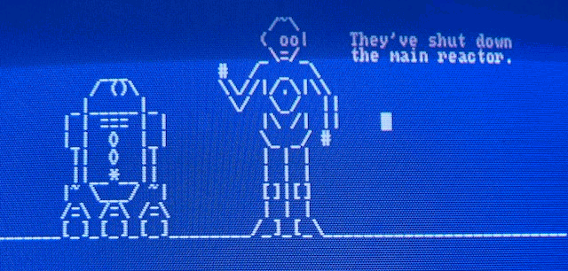
If you have an own server in your local network, you can connect to it via telnet and use command line internet tools there.
There are so called BBS doors, which are applications that provide a connection to other machines from the server running the BBS. Nowadays there are some that offer doors to the outside Internet, so it's possible to run a text based web browser, IRC or email client from the terminal there. One of such is the Public Electronic Networked Information System, which despite the horrible name, works pretty well and provides Usenet, Gopher, IRC and WWW access. It's neither safe nor nice, but it's possible to access the Internet this way on very low end machines, read the news, check the weather.
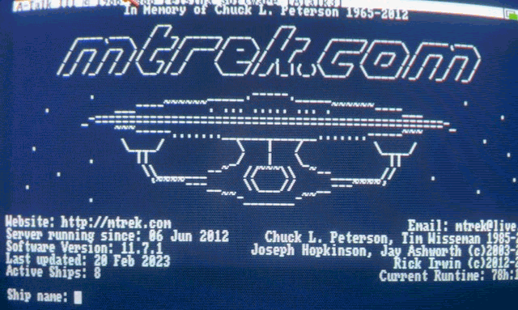
There are several ways, but they can be practically distilled into two options:
I would really recommend going with the second option as even though it's a bit more expensive, it will result in a much sealmess and nice experience, closer to how it originally was, without the need of poking around with a PC (which has to be next to your Amiga and turned on). As I have such a modem, I'd like to elaborate a bit more on how to set it up.
If you've never done this before, no need to panic, it's pretty simple and straight forward. There is also good documentation on the modem and how to set it up.
First, you need to plug the modem into the serial port of your Amiga and connect a 5V USB power source to it. Most mobile chargers would do.
Then you'll need a terminal software, I recommend A-Talk III, as it runs well from floppy, very simple to setup and what's even better, Marco Papa of Felsina Software made it public domain in 2010. You can grab the A-Talk III ADF here, and the manual here. Just boot a Workbench 1.3 floppy up, insert the A-Talk III disk and launch it.
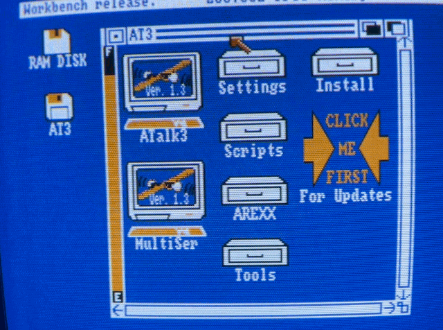
The Wimodem232 by default starts in a 300 baud mode, so you'll need to set your terminal to match that. Check
the rest of the settings in the menu to match the following:
Parity - None
Stop Bits - 1
No. Bits - 8
Handshake - RTS/CTS
Duplex - Full
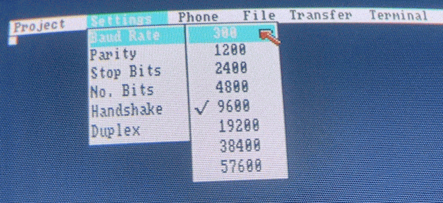
Save your settings in the Project menu.
By typing the command "ati", you can check the status information of the modem:
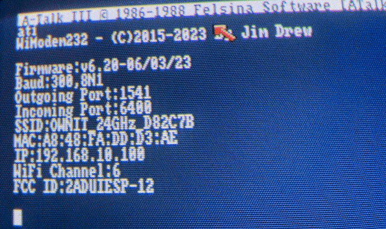
You can set the speed to faster (baud 9600) with:
AT*B9600
Then update your terminal's baud settings to match that.
You can save the default configuration of the modem with:
AT&W
So it doesn't get lost in case you reboot or unplug the WiModem232. If you'd ever want to go back to factory defaults, you can issue the command:
AT&F
This won't clear your address book, but it will reset everything else, and set the baud rate back to 300. There are also two emergency reset pads on the bottom side of the modem, so if anything would go wrong, which is unlikely, you can reset the modem by shorting those pads while turning the modem on.
It's time to configure the connection to your WIFI router. There are several ways to do this. The modem can serve you a web interface where you can configure the WIFI network from your phone or tablet. To enable this mode, type:
AT*WIFI
Now look at your mobile device and check the WIFI list. An entry called WiModem232 should appear. Click on that and you can configure the modem.
Another way is to do it manually from the terminal directly. Issuing the following command will list all the available WIFI networks:
AT*N
Then you can select the one you'd like to connect to with the following command:
AT*NS<number from the list>,<password>
Example:
AT*NS1,Password123
Or, you can also set your router's SSID directly, with the following command:
AT*SSID<your SSID>,<password> Example: AT*SSIDMYROUTER,Password123 Note: There is no space between the letters "SSID" and the router's actual SSID.
Now you're connected!
You can test if your connection works by connecting a server:
ATDT <server domain or ip>:<port number> Example: ATDT google.com:80
You should see "CONNECTED" on the screen. To hang up the connection, press the “+” key 3 times in a row very quickly, it should respond with saying "OK". Then you can type the command to hang up the connection:
ATH
You can also update the firmware of the modem now, it will reboot the modem, but your settings will be kept:
AT*UPDATE
And that's all there is to it really! You can connect to various BBS servers now, just pick your favourite.
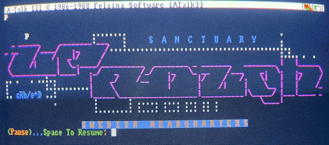
If by Online we mean accessing the actual Internet with applications running on our machine locally, that's a much more complicated problem and we have to awknowledge the limitations of the machine.
The TCP/IP stack and all the client applications take up too much space and memory to be used from a floppy disk and with 1MB of RAM. Another issue is the Kickstart 1.3. When the Internet started to become more widespread in the 90s, Kickstart 2.0 was already out and most Amiga developers used its features for making network enabled OS-friendly applications. Therefore all of the more advanced TCP/IP stacks on Amiga require at least Kickstart 2.0.
Besides Commodore's AS225 TCP/IP stack that came with the A2065 Zorro-II card for the Amiga 2000/3000/4000, the only TCP/IP stack that I'm aware of that runs on Kickstart 1.3 is AmigaNOS (Network Operating System). It is a port of KA9Q's NOS, a TCP/IP stack made for amateur packet radio systems. It should work on an Amiga 500 with 1Mb RAM and two floppy drives (to skip frequent disk swapping), it supports SLIP/PPP, but none of the more "modern" internet applications will work with it, as it doesn't have a complete bsdsocket.library emulation.
It has it's own command-line interface and you can use a few command-line applications like telnet, ftp, smtp, pop3 there. There isn't much documentation on it online, I only found this one page, which configures it for data exchange between an Amiga and a C64, so I decided to figure it out myself. I managed to set it up and can use the FTP client to transfer files or even browse the Gopherspace with a Gopher client that's using AmigaGuide. If you're interested how to configure it, see my AmigaNOS guide here.
I'm pretty sure however that it's not what most people mean when they say they'd like to bring their Amiga 500 online.
So what's the bare minimum needed to be able to use the graphical Internet applications (or at least some of them), from an Amiga 500?
You could have guessed it already:
Kickstart 2.0+, some extra memory and realistically, a hard drive.
If you don't have a hard drive, you can try TermiteTCP, which runs from a single floppy. I prepared a disk for you, see below. But to run some applications along it like a web browser, you'll need more memory and a hard drive.
My choice was a Commodore A590, which was the official hard drive offering from Commodore for the Amiga 500. It's a SCSI controller with a maximum of 2MB extra memory expansion inside. There were other manufacturers who offered hard drives too, like AlfaData/BSC with their AlfaPower 500 and GVP with the A500 HD+. Today we also have the option to buy a new expansion board that has everything included, like an ACA500+ with a X-Surf 500 network card. But for me the appeal in all this was the challenge to make it work with original and authentic hardware, and find the most basic and authentic setup possible, so this guide tries to cover that scenario.
The obvious question pops up, if we can use the WiModem232 with a TCP/IP stack. In theory, it should work with a PPP/SLIP connection, but in practice, I don't know of anyone who managed to make it work, including myself. If you do know someone, let me know!
Before tackling the challenge on bringing the system online, we need to solve two things:
There are several options for both. But without an expansion board, your options are limited to either transfering files with the help of AmigaExplorer via a null modem cable (here or here) or with some compromise for a new hardware, with a GOTEK floppy emulator. There is also the SDBox (SD card reader for the Parallel port), but I haven't tried it, so I can't recommend it yet. I tried both the null modem cable and the GOTEK though, and can recommend going for both, as you'll need the null modem cable anyway, and having a GOTEK makes life so much easier (just think trying out new games and demos). I installed my GOTEK in an external floppy case, so it looks nice.
Here is AmigaLove's excellent guide on AmigaExplorer and how to transfer files with a null modem cable. It was written for an Amiga 1200, but it works on Amiga 500 as well.
But you can also do it with a GOTEK drive by using an emulator. Just insert an empty ADF into the emulator's virtual floppy drive and copy stuff on it, then copy the ADF image to your GOTEK's USB stick.For the Kickstart, you also have two options. You can buy a new Kickstart ROM (there are DUAL ROMs too, where you can switch between Kickstart 1.3 and 3.1 with a physical switch to keep your system backwards compatible), or you can load the new Kickstart from a file, by mapping it to a memory location (soft-kick). I wanted to keep the original 1.3 chip in my Amiga 500, so I took the soft-kick route. Click here for a guide on how to set it up, and optionally, how to make a dual-boot setup between Workbench 1.3 and 3.1.
Here is all that's needed to bring our Amiga 500 to the Internet:
Optional (but recommended):
On the PC side: I used a Raspberry Pi, which is always on and has a pppd running. It's connected to the Amiga via a NullModem cable and a serial to USB adapter. An older PC that has a 9-pin female serial port would also do the job and you can skip the adapter. But you can find serial to USB adapters all over eBay for a very low cost.
On the Amiga side: The only thing we need is a TCP/IP stack and some applications. You'll see that's a challenge in itself, as most Internet applications barely work on a 68000 CPU and 2MB of RAM.
Let's prepare the PC side first. I was using Raspberry Pi OS Lite Bullseye:
Install ppp if it isn't already present:
sudo apt install ppp
Enable IP forwarding:
sudo sh -c "echo 1 > /proc/sys/net/ipv4/ip_forward"
Create a script that will set the Network Address Translation rules and start the ppp daemon:
nano start-amiga-ppp.sh
Paste the following to it:
#!/usr/bin/env bash
# Caution, the following two commands will clear all rules!
# Comment them out if you have rules already configured and you don't want that
sudo iptables -F
sudo iptables -t nat -F
# Configure the Network Address Translation (NAT) between PPP and your local network.
# My Raspberry Pi is connected to my local network via Wifi, so I'm using wlan0
# If you're connected via ethernet, update the commands to use eth0 instead)
sudo iptables -t nat -A POSTROUTING -o wlan0 -j MASQUERADE
sudo iptables -A FORWARD -i wlan0 -m state --state RELATED,ESTABLISHED -j ACCEPT
sudo iptables -A FORWARD -i ppp0 -o wlan0 -j ACCEPT
# Start the ppp connection
sudo pppd file /etc/ppp/amiga
Set it executable:
chmod +x start-amiga-ppp.sh
Create the /etc/ppp/amiga configuration file for pppd:
sudo nano /etc/ppp/amiga
Paste the following contents to it:
# Enable connection debugging facilities debug # Don't detach from the controlling terminal. Without this option, # if a serial device other than the terminal on the standard input is specified, # pppd will fork to become a background process. nodetach # Serial device is the device used to connect to the Amiga # In my case it's the USB-Serial adapter which I used to connect the null modem cable # to the Raspberry Pi's USB port. /dev/ttyUSB0 # Baud (19200 is the maximum the Amiga 500 can handle with the serial.device) 19200 #38400 #57600 #115200 # No authentication required noauth # Don't use the modem control lines. With this option, pppd will ignore # the state of the CD (Carrier Detect) signal from the modem and will not # change the state of the DTR (Data Terminal Ready) signal. # This is the opposite of the modem option. local # Local and remote IP addresses and the netmask # The Raspberry Pi will be reachable on 10.0.0.1 from the Amiga and # the 10.0.0.2 will be the Amiga's address. They're are not the same as your main # local network's address and they're arbitrary, you can make them up as you like. # Your local network is likely in the 192.168.0.1 or similar range. # That's why we configured the NAT to translate between these two networks. 10.0.0.1:10.0.0.2 netmask 255.255.255.0 # Enables the "passive" option in the LCP. With this option, pppd will # attempt to initiate a connection; if no reply is received from the # peer, pppd will then just wait passively for a valid LCP packet from # the peer (instead of exiting, as it does without this option). passive # Add an entry to this system's ARP [Address Resolution Protocol] # table with the IP address of the peer and the Ethernet address of this system. # This will have the effect of making the peer appear to other systems # to be on the local ethernet. proxyarp # Do not exit after a connection is terminated, try reconnecting instead persist # Use software flow control (i.e. XON/XOFF) to control the flow of data on the serial port. # Much slower, better to go with RTS/CTS hardware flow control, which is the default #xonxoff
Run the start-amiga-ppp.sh script so that the ip forwarding rules are set and the interface is up.
Optional, we can set the PPP connection up as a service:
Create /etc/systemd/system/ppp-amiga.service with these contents:
[Unit] Description=Amiga PPP networking [Service] Type=simple ExecStart=/usr/sbin/pppd file /etc/ppp/amiga [Install] WantedBy=multi-user.target
Reload the services, enable and start the connection:
sudo systemctl daemon-reload sudo systemctl enable ppp-amiga sudo systemctl start ppp-amiga
sudo systemctl status ppp-amiga ppp-amiga.service - Start PPP for Amiga networking Loaded: loaded (/etc/systemd/system/ppp-amiga.service; enabled; vendor preset: enabled) Active: active (running) since Sat 2023-10-07 00:04:16 CEST; 5s ago Main PID: 3324 (pppd) Tasks: 1 (limit: 1599) CPU: 29ms CGroup: /system.slice/ppp-amiga.service 3324 /usr/sbin/pppd file /etc/ppp/amiga Oct 07 00:04:16 pi pppd[3324]: using channel 19 Oct 07 00:04:16 pi pppd[3324]: using channel 19 Oct 07 00:04:16 pi pppd[3324]: Using interface ppp0 Oct 07 00:04:16 pi pppd[3324]: Using interface ppp0 Oct 07 00:04:16 pi pppd[3324]: Connect: ppp0 <--> /dev/ttyUSB0 Oct 07 00:04:16 pi pppd[3324]: Connect: ppp0 <--> /dev/ttyUSB0 Oct 07 00:04:16 pi pppd[3324]: sent [LCP ConfReq id=0x1
Don't forget that the iptables forwarding rules are not persistent by default and need to be re-applied after reboot. You can make them persistent with iptables-persistent.
Check the rules on the system:
sudo iptables -L
Install iptables-persistent:
sudo apt install iptables-persistent
Save the rules:
sudo iptables-save > /etc/iptables/rules.v4
There is a lightweight TCP/IP stack called TermiteTCP by Oregon Research which comes with PPP support, although the demo on Aminet has PPP and bsdsocket.library support turned off, so it's pretty much useless, but as all Oregon Research products became public domain more than 10 years ago, I dared to prepare a floppy installation of TermiteTCP version 1.50, which you can grab. Here is the TermiteTCP version 1.60 installer disk too.
It's very easy to setup, although not very stable, so I can't really recommend it. It was dropping the connection after a few minutes despite increasing the connection timeout and verification interval, but if you want to play around with it, here is how I set it up:
Launch TermiteTCP68k and open the connection settings from the menu. You can leave most things at default here, just make sure it matches the pppd settings on your PC's side:
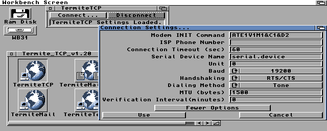
Open the network settings. Set the local IP to 10.0.0.2 (amiga), remote to 10.0.0.1 (pc), the DNS server to your router's IP, which is 192.168.10.1 in my case. You can set the alternate DNS to 10.0.0.1 (pc) and pick a default domain, I typed just a500 there.
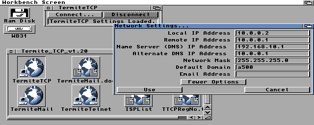
Click connect. TermiteTCP will ask if you want a direct serial connection, say Yes.
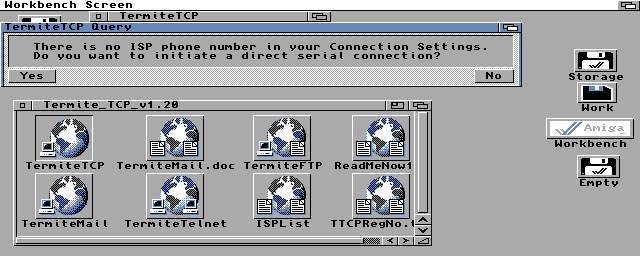
That's it, you're online. You can use the FTP or Telnet client provided on the disk to connect to the outside world.
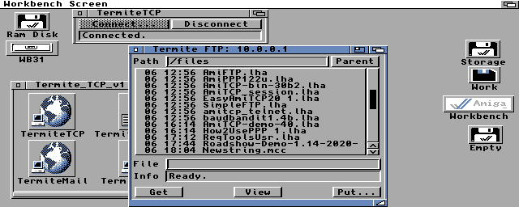
Unfortunately you can't run a web browser without a hard drive, as all graphical browsers require either ClassAct or MUI and several libraries to be installed (even AMosaic needs MUI).
Now you have more options. Boot into Workbench 3.1 and have an Lha utility at hand.
I went with the demo version of the Miami 3.0b TCP/IP stack, as I used it back in the day, it has PPP support built-in (as opposed to AmiTCP) and can be configured easily from GUI. The demo version lets you stay online for 60 minutes, which is enough for this test and casual use. Unfortunately there is no way to obtain the Miami license from legal sources, but if you want to try a TCP/IP stack that's still supported, RoadShow is available from APC&TCP for 25 EUR, and it runs on 68000 and has PPP support built-in also. I haven't tried it, but might give it a go later.
Install the following stuff and their dependencies on your Amiga if you don't have them already:
Open the interface settings and set it up like this. Using built in serial PPP/CSLIP, Baud 19200 (same that you set in pppd on the PC side), static IP address 10.0.0.2 (the Amiga 500's IP):
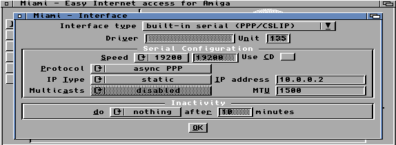
Go to the TCP/IP settings and set the hostname, real name, username, leave everything else unchecked:
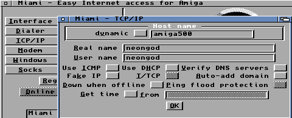
In the Modem settings and check the NullModem option:
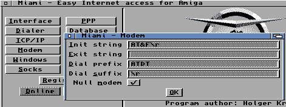
The PPP settings remain default, it looks like this:
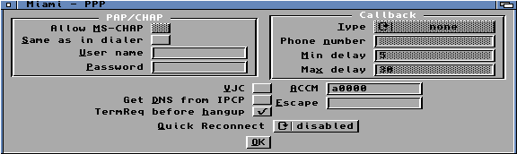
Open the Database settings and select the DNS Servers option in the Network Database. Then click Add and enter your router's local address, which is in my case 192.168.10.1 and also the PC's address which we configured to 10.0.0.1 in the pppd settings:
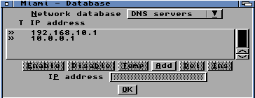
That's all there is to it, save the configuration as default from the menu, and you're ready to test it. Click Online and hope for the best. If you did everything right, it should go online. You can open a new CLI window, go to miami: and check if ping works to 10.0.0.1, then to an external address by typing:
miamiping www.google.com
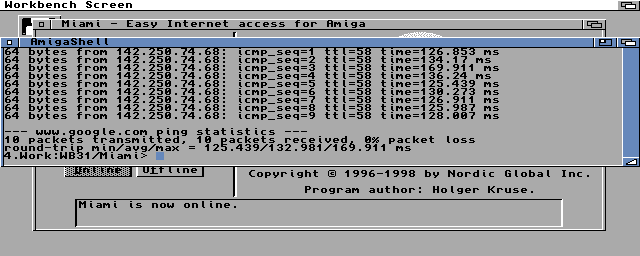
If everything works well, you can try out the BaudBandit device to get higher speeds. First, install BaudBandit on your Amiga. Then, set a higher baud rate in the pppd on the PC side (57600 for example) and restart the service. In Miami, open the Interface settings, change the interface type to "serial driver" and type in BaudBandit.device (pay attention to upper and lower cases, it's case sensitive!). Set the speed to the same you set in pppd, the flow control to RTS/CTS (same as in pppd), and serial mode 81N. All the rest is the same as before.
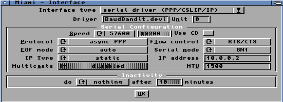
On my system (1MB Chip RAM, 2MB Other RAM), I have 3-400Kbyte free memory after launching either AWeb or Voyager (while Miami is online with the GUI closed). It's possible to open a simple website though! Aminet and Frogfind.com works just fine. Getting a physical dual Kickstart ROM would help a bit, saving another 0.5MB of memory, but forget about pages that are image heavy or require SSL, that's way over the capabilities of this setup. It's painfully slow and not what this machine was intended for, but it works! If you want to visit sites that are forcing https (most sites do today), you can install a WebOne proxy on your Linux machine along the pppd, which can convert all https traffic to http and do other cool things to make the modern web more accessible from your Amiga.
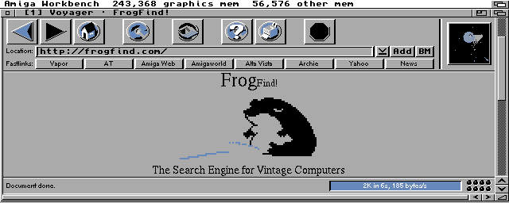
With BaudBandit you can go up to 57600 baud speed on a 4 color screen, so I've been using that for FTP transfers. It doesn't work on a 16 color screen though (starts to drop packages), so you have to choose between speed or a more "colorful" browsing experience.
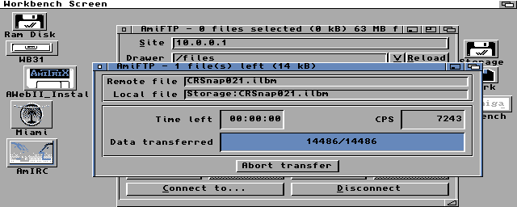
What am I using all this for then? Chatting with friends on IRC brings back memories, and it's nice to be able to get software from Aminet or other places. I have an FTP server on my RaspberryPi for easy file exchange, and I can also backup files from the Amiga to the FTP. All the WB3.1 screenshots in this guide were grabbed on my Amiga (with CRSnap) and transferred this way.
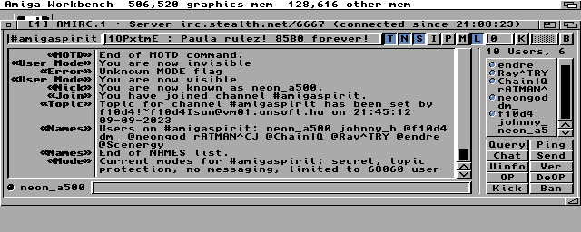